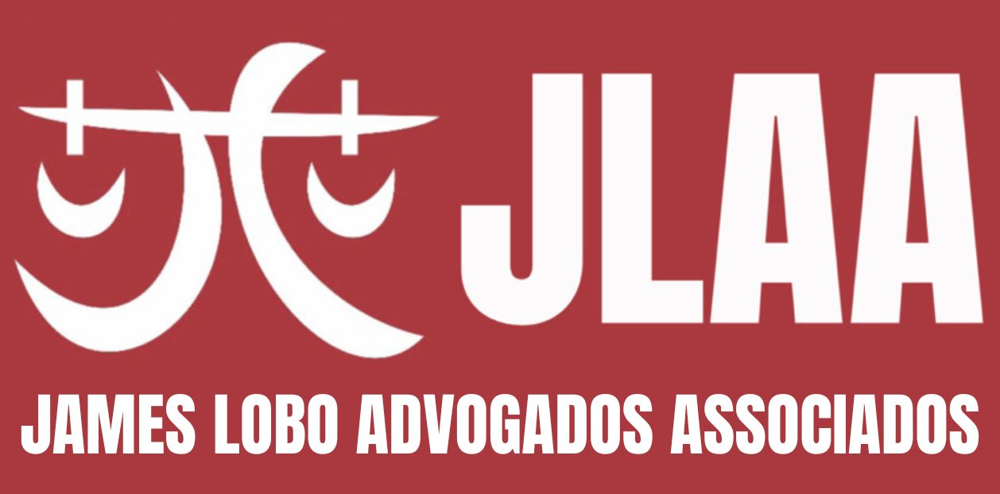
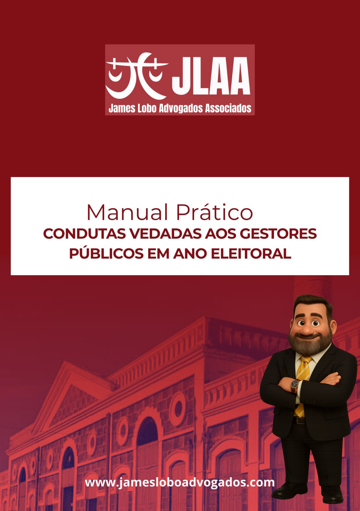
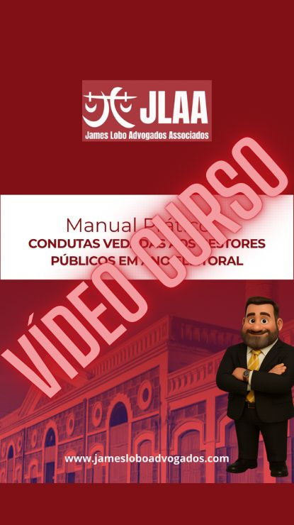

Está preparado para enfrentar as Eleições de 2026?
Ver produtosMeu nome é James Lobo. Desde 2004 atuo em campanhas eleitorais, assessorando candidatos, partidos políticos, coordenando campanhas eleitorais e equipes jurídicas. Uma campanha não admite dúvidas e um erro pode custar o trabalho de vários anos. Pensando nisso, elaborei diversos infoprodutos com linguagem simples e objetiva, sem juridiquês!
Fiquem à vontade para conhecer e, em caso de dúvidas, entrem em contato e VAMOS CONVERSAR SOBRE DIREITO ELEITORAL!
Depois do grande sucesso do Manual de Prática Eleitoral 2024, trabalhamos neste Manual as principais inovações introduzidas pelas resoluções do TSE em 2026. Afinal de contas, uma campanha nunca é igual à outra.

Manual voltado especificamente para gestores públicos, assessores políticos, dirigentes partidários e pré-candidatos. O ano eleitoral envolve regras para todas as esferas da administração pública e é necessário estar sempre vigilante e preparado para as situações que possam surgir.

Manual voltado especificamente para gestores públicos, assessores políticos, dirigentes partidários e pré-candidatos. O ano eleitoral envolve regras para todas as esferas da administração pública e é necessário estar sempre vigilante e preparado para as situações que possam surgir.
Nosso primeiro manual de prática, com a experiência de mais de 20 anos atuando como advogado em eleições. Utilizando linguagem simples e objetiva, com modelos dos principais documentos necessários durante todo o ano eleitoral, bem como modelos de petições e recursos judiciais.
O conteúdo do e-book em formato de vídeo, com mais de 7 horas de conteúdo, gravados ao vivo em um auditório com mais de 300 participantes.
Muito obrigado pela oportunidade de conhecer nosso trabalho. Nosso projeto envolve a contínua discussão sobre o Direito Eleitoral. Para atuar como advogado, assessor político, dirigente partidário e, até mesmo, candidato, não basta conhecer a legislação. É necessário compreender. Compreender o objetivo do legislador quando criou aquela legislação e o mais recente entendimento dos tribunais eleitorais.
Todos os produtos são elaborados com linguagem simples e direta, sem juridiquês.
Para auxiliar na comunicação desta mensagem, criei o "Dr. Lobinho", que é presença marcante nos materiais lançados este ano.
Mais uma vez, agradeço e VAMOS CONVERSAR SOBRE DIREITO ELEITORAL!